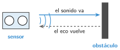
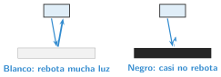

Sensores
🤔 Pienso5 min
Qué hago aquí: Piensa un momento y contesta con lo que ya sabes. No pasa nada si no lo sabes: es para empezar.
Tu móvil gira la pantalla al ponerlo de lado. Baja el brillo a oscuras. ¿Qué tiene que «notar» para hacerlo?
📖 Leo y aprendo15 min
Qué hago aquí: Lee despacio, mira los dibujos y los ejemplos, y quédate con la idea clave del final.
Un sensor mide algo (luz, distancia, temperatura) y lo convierte en un número que la placa puede leer. Son los «sentidos» del robot.
| Sensor | Qué mide | Para qué lo usa un robot |
|---|---|---|
| Pulsador | Si lo aprietan | Saber si ha chocado |
| Luz (LDR) | Cuánta luz hay | Encender luces de noche |
| Ultrasonidos | La distancia | No chocar con las paredes |
| Siguelíneas | Si el suelo es blanco o negro | Seguir una línea |
| Temperatura | El calor | Hacer un termostato |
| Acelerómetro | Si se mueve o se inclina | Saber si se ha volcado |


La Micro:Bit ya lleva sensores. En MakeCode se leen con bloques redondos: nivel de luz (de 0 a 255), temperatura (°C), aceleración y los botones A y B.
✏️ Hago25 min
Qué hago aquí: Haz las actividades en orden. Empieza siempre por las básicas.
Une cada sensor con lo que mide.
| Ultrasonidos • | • La luz |
| LDR • | • Si se inclina |
| Acelerómetro • | • La distancia |
| Siguelíneas • | • Blanco o negro |
¿Qué sensor necesita cada robot? a) Un robot que no se cae de la mesa. b) Una puerta que se para si choca.
Mira el dibujo del siguelíneas. ¿Por qué distingue el negro del blanco?
✏️ Puedes responder escribiendo, con un dibujo o un esquema, o contándolo en voz alta.
En MakeCode, haz este programa: para siempre → mostrar número nivel de luz. Pruébalo y anota los números.
| Con la luz del aula | Tapando la placa | Con la linterna |
|---|---|---|
Con tus números, elige un umbral. Programa la Micro:Bit para que muestre una luna si está oscuro y un sol si hay luz.
🚀 Amplío (si quieres saber más)
Qué hago aquí: ¿Has terminado? Lee la curiosidad o elige el reto. Es voluntario.
El eco tarda 0,004 segundos en volver. ¿A qué distancia está el obstáculo?
✅ Compruebo5 min
Qué hago aquí: Contesta sin mirar la ficha y marca cómo lo llevas.